{% include JB/setup %}
{% raw %}
<div>
<a name="toppage" class="pcalibre calibre1"></a><table width="100%" border="0" cellspacing="0" cellpadding="0" class="sfbody"><tr valign="top" class="calibre2"><td class="calibre3"><a name="MainContent" class="pcalibre calibre1"></a><table width="95%" class="sfbody"><tr class="calibre2"><td class="pcalibre1 v"><!--Copyright (c) 2002 Safari Tech Books Online--><table width="100%" border="0" cellspacing="0" cellpadding="2" class="calibre4"><tr class="calibre2"><td valign="middle" class="v1 pcalibre1" height="5"></td></tr><tr class="calibre2"><td valign="middle" class="v1 pcalibre1"><table cellpadding="0" cellspacing="0" border="0" width="100%" class="calibre4"><tr class="calibre2"><td class="calibre6"><span class="calibre7"> </span>
                   
                  <span class="calibre7">   </span>
             <span class="calibre7"> </span></td></tr></table></td><td class="calibre8"/><td valign="middle" class="v2 pcalibre1"> 
           
          <span class="calibre7"><a target="_self" href="ch09.html" title="Previous section" class="pcalibre calibre1"></a></span>
				
				 
				
				<span class="calibre7"><a target="_self" href="ch09lev1sec2.html" title="Next section" class="pcalibre calibre1"></a></span></td></tr></table><div id="section" class="calibre15"><table width="100%" border="0" cellspacing="0" cellpadding="0" class="calibre4"><tr class="calibre2"><td valign="top" class="calibre8"><a href="11061538.html" class="pcalibre calibre1"></a>Security Game Programming Networking Programming Greg Hoglund Gary McGraw Addison Wesley Professional Exploiting Online Games: Cheating Massively Distributed Systems<a name="ch09lev1sec1" class="pcalibre calibre1"></a>
<h3 id="title-IDARJHSF" class="docSection1Title">Conversions and Modding</h3>
<p class="docText">The terms <span class="docEmphasis">conversions</span> and <span class="docEmphasis">modding</span> are hacker slang for custom modifications made to a game. Modding comes in many forms, from creating simple nude patches (changing textures and surfaces to make everyone's character appear to be naked, as shown in <a class="pcalibre6 pcalibre5 calibre1" href="#ch09fig01">Figure 9-1</a>) to completely replacing all the game content (called <span class="docEmphasis">total conversion</span>).</p>
<a name="ch09fig01" class="pcalibre calibre1"></a><p class="calibre28"><center class="calibre29">
<h5 class="docFigureTitle">Figure 9-1. Some game hackers replace the textures for character models to make the resulting characters appear to be nude. Apparently they need to get out more. (From &lt;<a class="pcalibre6 pcalibre5 calibre1" target="_blank" href="http://www.edgeofnowhere.cc/viewtopic.php?t=314283">http://www.edgeofnowhere.cc/viewtopic.php?t=314283</a>&gt;; reproduced with permission.)</h5>
</center></p><p class="docText">
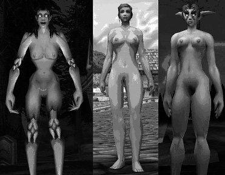</p>
<br class="calibre15"/>
<p class="docText"><a name="iddle1631" class="pcalibre calibre1"></a><a name="iddle1748" class="pcalibre calibre1"></a><a name="iddle1786" class="pcalibre calibre1"></a><a name="iddle2131" class="pcalibre calibre1"></a>Sometimes the results are a riot. For example, in <a class="pcalibre6 pcalibre5 calibre1" href="#ch09fig02">Figure 9-2</a> a rather silly game hacker has replaced the fishing lure model in a game with that of a cannon. Wouldn't want to cast that line!</p>
<a name="ch09fig02" class="pcalibre calibre1"></a><p class="calibre28"><center class="calibre29">
<h5 class="docFigureTitle">Figure 9-2. When games are modded, the results are often amusing. Here, a hacker has replaced the graphics for a fishing lure with the graphics for a cannon. The game client happily renders the result as if nothing were amiss.</h5>
</center></p><p class="docText">
</p>
<br class="calibre15"/>
<p class="docText"><a name="iddle1357" class="pcalibre calibre1"></a><a name="iddle1603" class="pcalibre calibre1"></a><a name="iddle1754" class="pcalibre calibre1"></a><a name="iddle2125" class="pcalibre calibre1"></a><a name="iddle2158" class="pcalibre calibre1"></a><a name="iddle2220" class="pcalibre calibre1"></a>In most cases, modding is applied to visible graphics content (such as models, textures, and levels) and involves substitution. But modding certainly isn't limited to content that you can see and render. In fact, at the other end of the spectrum, the concept can be applied directly to the game software.</p>
<p class="docText">Modding a game executable allows the game's logic and rules to be altered. At the extreme, a hacker can completely replace the game client with a homegrown stand-in. In such projects, this means completely rewriting the rendering engine and interface logic. Of course, hackers have explored the many possible approaches between simple substitution and complete client replacement. For example, a hacker might refactor some of the graphics, keeping some "as is" while making various changes to the rendering engine or the game client code.</p>
<p class="docText">Most modding replaces what are called <span class="docEmphasis">media</span> in the business—pictures and sounds. This modding involves only tweaking the façade of a game. Just under the surface, the game remains essentially the same (that's because the rules that make it work remain the same). With a total conversion, a game hacker can make an existing game look like an entirely new one (e.g., make a medieval game full of knights and dragons instead look like <span class="docEmphasis">Star Wars</span> with droids and Jedi knights).</p>
<p class="docText">Some gaming companies frown on the notion of modding, while others encourage it. Game companies obviously want to keep the look and feel of their games intact. A game full of dark, ominous ogres, dragons, and swords can become quite silly when daffodils replace the ogres, giant Teletubbies replace the dragons, and swords become soap bubble wands. On the other hand, game companies can extend the life of their games if they can foster a healthy modding community, ultimately increasing their revenues.</p>
<p class="docText">Modding can be fun because it allows interaction with the game mechanics and story without writing an entire game from scratch. Because of that, modding is an outstanding way to learn how games are built and what their inner workings are really like.</p>
<a name="ch09lev2sec1" class="pcalibre calibre1"></a>
<h4 id="title-IDAHPHSF" class="docSection2Title">Total Conversions</h4>
<p class="docText">Total conversions (TCs) are often necessary if modders intend to sell the resulting product. Because a TC replaces all copyrighted content, some people believe that a TC can actually be sold as an add-on to an existing game. Arguably, the most successful TC is Counter-Strike (a TC available for Half-Life from Valve Software). This TC is sold commercially. <a name="iddle1003" class="pcalibre calibre1"></a><a name="iddle1550" class="pcalibre calibre1"></a><a name="iddle1730" class="pcalibre calibre1"></a><a name="iddle1797" class="pcalibre calibre1"></a><a name="iddle2321" class="pcalibre calibre1"></a><a name="iddle2322" class="pcalibre calibre1"></a>Counter-Strike has been cited as not only the most successful TC but also the most widely played FPS game in history.</p>
<p class="docText">The logic goes that because commercial game media are copyrighted, redistributing that copyrighted media (including the client engine) is a crime. To avoid that crime, a TC must be installed on a machine that has a legitimate version of the game client already installed. It works by replacing the appropriate media files. You can think of this as piggybacking on an existing game system.</p>
<p class="docText">A very popular form of TC is to make <span class="docEmphasis">Star Wars</span> themes for FPS games. Of course, in a TC like this, the game's copyrighted content is being replaced with different, but still copyrighted, content. In such cases it's not legal to redistribute the new content unless you actually own the copyright. On the other hand, sometimes the copyright owners don't mind, nor do they pursue legal action, which has been the case with many <span class="docEmphasis">Star Wars</span> mods.</p>
<a name="ch09lev2sec2" class="pcalibre calibre1"></a>
<h4 id="title-IDAKRHSF" class="docSection2Title">Rewriting the Client</h4>
<p class="docText">If you wanted to play a fantasy game based on WoW artwork and models, you could replace the client executable to make a stand-alone game. If you wrote a server program as well, your replacement client-server package could be used to run your own online universe, separate from the commercial one being run by Blizzard Entertainment. Of course, for this approach not to infringe on copyrights, you would need to install the original game first, since redistributing any part of the original game would be illegal.</p>
<p class="docText">Consider the following example modding experiment: Build a full-client replacement that would pit the characters of the WoW universe against each other in brutal head-to-head car racing. The modification could be called Orc Speed Racing and could include racetracks in all the popular regions of the WoW universe. This mod makes a good example because it requires a full client replacement with physics engine and additional content in the form of new maps and racecars. Such a modification can be architected as shown in <a class="pcalibre6 pcalibre5 calibre1" href="#ch09fig03">Figure 9-3</a>.</p>
<a name="ch09fig03" class="pcalibre calibre1"></a><p class="calibre28"><center class="calibre29">
<h5 class="docFigureTitle">Figure 9-3. The architecture of a fictitious WoW TC called Orc Speed Racing. Notice how parts of the game are replaced while other parts remain the same.</h5>
</center></p><p class="docText"><div class="v8 pcalibre3 pcalibre2"><a target="_blank" href="fig09-03_alt.jpg" class="pcalibre calibre20">[View full size image]</a></div>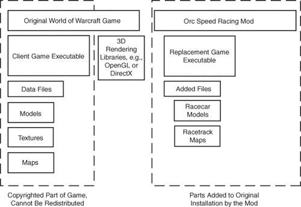</p>
<br class="calibre15"/>
<p class="docText"><a name="iddle1556" class="pcalibre calibre1"></a><a name="iddle1752" class="pcalibre calibre1"></a>In this process, you discover that rendering the models that come with the standard WoW client is hard work. Fortunately, others have already done much of that work for you. We directly leverage ideas, inspiration, and know-how from the WowMapView and WowModelView projects. These two programs, and others like them, are excellent examples of real-world modding tools. Related projects include scripts for 3D Studio (a popular off-the-shelf program from Autodesk) that convert WoW models to and from <tt class="calibre38">.3DS</tt> format.</p>
<p class="docText">WowMapView was originally created to read WoW terrain files offline (from the disk or a cache) and allow a user to explore the WoW universe without being online with the server. WowModelView does the same thing for rendering—providing the user a way to peruse game models offline. Both programs rely on homegrown 3D rendering built on top of the OpenGL library (which we briefly describe in <a class="pcalibre6 pcalibre5 calibre1" href="ch07.html#ch07">Chapter 7</a>).</p>
<p class="docText">As we mentioned, piggybacking on the game engine and data provided with the WoW client makes it possible to create stand-alone programs that render parts of the WoW universe. <a class="pcalibre6 pcalibre5 calibre1" href="#ch09fig04">Figure 9-4</a> shows a mod we created that combines two aspects of the WoW universe in a new way: The terrain from the barrens (a location in the WoW universe) has been augmented with orc huts placed in ways not normally found in that region.</p>
<a name="ch09fig04" class="pcalibre calibre1"></a><p class="calibre28"><center class="calibre29">
<h5 class="docFigureTitle">Figure 9-4. This example of a mod uses client-side data and models from WoW in an offline mode. Terrain from the barrens was combined with an orc hut model. (Orc huts are usually not found like this in the barrens.)</h5>
</center></p><p class="docText">
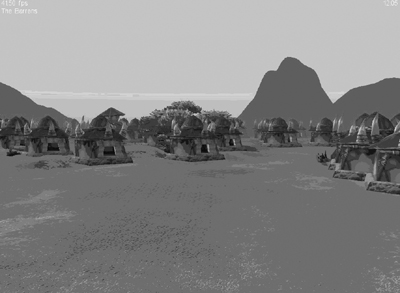</p>
<br class="calibre15"/>
<a name="ch09lev2sec3" class="pcalibre calibre1"></a>
<h4 id="title-IDA1UHSF" class="docSection2Title">Rewriting the Server</h4>
<p class="docText">If you intend for your mod to work online, there are a number of routes you can explore. The easiest is to leave the game's existing client-server model intact and simply reskin things in individual clients. For example, the <a name="iddle1798" class="pcalibre calibre1"></a>infamous nude patch from <a class="pcalibre6 pcalibre5 calibre1" href="#ch09fig01">Figure 9-1</a> can be applied locally to an individual client program without affecting the online client-server model.</p>
<p class="docText">Note that altering game play and logic usually necessitates a change in server mechanics as well. For games like WoW, the server isn't sold with the client, and the game company prefers that you play only on its official servers. Because the game cannot run in server mode, game modders are left with only one option—write their own servers.</p>
<p class="docText">You can write servers to make use of the existing client-server protocol that comes with the game, or as an alternative, you can develop an entirely new protocol. If you're not replacing the client executable, the protocol will likely remain intact and your server will need to be compliant with the game's existing protocol. If you do replace the game client logic, you'll need to develop an independent client-server protocol.</p>
<p class="docText">Let's return to our fictitious mod. In Orc Speed Racing, we are replacing the entire game client with the new racing game client. Ultimately, we must develop a new game server specifically for this racing game. Note that there is no need to use a protocol with any resemblance to the original WoW protocol. <a class="pcalibre6 pcalibre5 calibre1" href="#ch09fig05">Figure 9-5</a> shows the architecture of the new client-server model for Orc Speed Racing.</p>
<a name="ch09fig05" class="pcalibre calibre1"></a><p class="calibre28"><center class="calibre29">
<h5 class="docFigureTitle">Figure 9-5. The client-server architecture for our fictitious Orc Speed Racing mod.</h5>
</center></p><p class="docText">
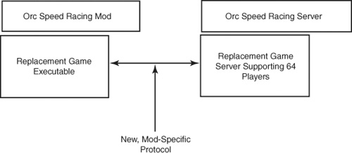</p>
<br class="calibre15"/>
<p class="docText"><a class="pcalibre6 pcalibre5 calibre1" href="#ch09fig06">Figure 9-6</a> illustrates a potential model for a game expansion pack. In this scenario, let's say the expansion pack provider has added an entirely new realm to the WoW universe. The provider copyrighted everything in the new world, so the look and feel belongs solely to the provider (new models, <a name="iddle1085" class="pcalibre calibre1"></a><a name="iddle1442" class="pcalibre calibre1"></a><a name="iddle1476" class="pcalibre calibre1"></a><a name="iddle1733" class="pcalibre calibre1"></a><a name="iddle1745" class="pcalibre calibre1"></a>animations, sound, storylines, and so on), and the world server provided for the expansion pack doesn't serve any parts of the universe provided on the original servers. Thus, the new realm is entirely new and distinct (such as a new continent or island).</p>
<a name="ch09fig06" class="pcalibre calibre1"></a><p class="calibre28"><center class="calibre29">
<h5 class="docFigureTitle">Figure 9-6. A game expansion pack model in which the mod supplier also sells accounts to an online server.</h5>
</center></p><p class="docText">
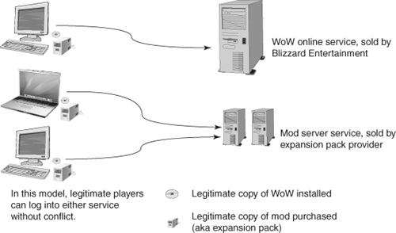</p>
<br class="calibre15"/>
<p class="docText">Players who have the expansion pack can log into this new realm and play on the new continent provided they have an account with the expansion pack provider. In theory, this model would allow the mod company to run a successful business, would not infringe on any copyrights, and would extend the life of the underlying game engine by keeping it fresh with new content. Unfortunately, many game companies don't like this model, which they apparently see either as competition with their own online service or as a system that encourages people to use pirated copies of the game client.<sup class="docFootnote"><a class="pcalibre6 pcalibre5 calibre1" href="#ch09fn01">[1]</a></sup> In the case of WoW, the third-party service provider may need to pass authentication through to the main WoW servers because part of the game's copyright protection is implemented in the login process.</p><blockquote class="calibre24"><p class="docFootnote1"><sup class="calibre31"><a name="ch09fn01" class="pcalibre calibre1">[1]</a></sup> Remember from <a class="pcalibre6 pcalibre5 calibre1" href="ch02.html#ch02">Chapter 2</a> that antipiracy mechanisms usually involve interaction with the original game servers to check game client legitimacy.</p></blockquote>
<p class="docText">WoW has a long history of independent server development. Such hacks have traditionally been called <span class="docEmphasis">emulation servers</span>. The problem is that Blizzard Entertainment frowns on the very idea. In fact, Blizzard has threatened to sue pretty much anyone who has ever published an emulation server on the Net. (Recall the fate of the poor BnetD developers we introduce in <a class="pcalibre6 pcalibre5 calibre1" href="ch04.html#ch04">Chapter 4</a>.) Blizzard's argument has been that emulation servers allow people to play pirated versions of the game (since some security checks require the server). Games have always had ways to check their authenticity, typically with a serial number or key. The WoW game is no different but does have some clever engineering tricks to make the server authentication interdependent with the serial number key check, thus providing a technical platform to support legal action against people who change the server authentication procedure. In short, a brilliant move on the game developer's part.</p>
<p class="docText">In some cases, games check their own licenses locally (rendering them susceptible to classic cracking attacks). A problem arises when a game company uses its online service as an additional method of checking authenticity. The game can check a serial number in a traditional client-side manner, but the online service provides an additional layer of security. Because independent servers can't access corporate key servers, they can't <a name="iddle1557" class="pcalibre calibre1"></a><a name="iddle1757" class="pcalibre calibre1"></a><a name="iddle2141" class="pcalibre calibre1"></a>check keys online even if they wanted to.<sup class="docFootnote"><a class="pcalibre6 pcalibre5 calibre1" href="#ch09fn02">[2]</a></sup>
 Even though the game still requires a serial number to play, companies taking a hard line against server emulation go about shutting down independent servers by using the DMCA law to argue that external servers promote piracy (see <a class="pcalibre6 pcalibre5 calibre1" href="ch04.html#ch04">Chapter 4</a>).</p><blockquote class="calibre24"><p class="docFootnote1"><sup class="calibre31"><a name="ch09fn02" class="pcalibre calibre1">[2]</a></sup> If companies like Blizzard offered a legitimate way for third-party servers to perform a key check, they might be surprised at how willing third-party server developers would be to add this feature. Of course, the main problem is loss of monthly server-subscription revenue. A solution could involve enforcing client "freshness" by using a trusted clock and a cryptographically protected client timestamp that resets only when monthly fees are paid.</p></blockquote>
<p class="docText">In reality, such legal efforts haven't worked very well, and many independent game servers operate for WoW clients even as this book goes to press. However, none of these servers are sanctioned by Blizzard, and they could be made instantaneously incompatible with the base game at any point through standard game evolution practices.</p>
<p class="docText"><a class="pcalibre6 pcalibre5 calibre1" href="#ch09fig07">Figure 9-7</a> shows a list of available third-party servers for WoW. The client version required is 1.9.4—the servers don't work with the latest version of WoW. This is because the servers have to be updated whenever <a name="iddle1002" class="pcalibre calibre1"></a><a name="iddle1446" class="pcalibre calibre1"></a><a name="iddle1548" class="pcalibre calibre1"></a><a name="iddle1549" class="pcalibre calibre1"></a><a name="iddle1683" class="pcalibre calibre1"></a><a name="iddle1729" class="pcalibre calibre1"></a><a name="iddle1737" class="pcalibre calibre1"></a><a name="iddle1747" class="pcalibre calibre1"></a><a name="iddle1758" class="pcalibre calibre1"></a><a name="iddle1762" class="pcalibre calibre1"></a><a name="iddle1779" class="pcalibre calibre1"></a><a name="iddle1791" class="pcalibre calibre1"></a><a name="iddle1924" class="pcalibre calibre1"></a><a name="iddle2159" class="pcalibre calibre1"></a><a name="iddle2319" class="pcalibre calibre1"></a>a new version of the WoW client becomes available. This makes them always slightly behind the curve.</p>
<a name="ch09fig07" class="pcalibre calibre1"></a><p class="calibre28"><center class="calibre29">
<h5 class="docFigureTitle">Figure 9-7. A list of successful, operational, private WoW servers at the time of this writing. Literally hundreds are available. (From &lt;<a class="pcalibre6 pcalibre5 calibre1" target="_blank" href="http://www.wowstatus.net/serverlist.php">http://www.wowstatus.net/serverlist.php</a>&gt;.)</h5>
</center></p><p class="docText"><div class="v8 pcalibre3 pcalibre2"><a target="_blank" href="fig09-07_alt.jpg" class="pcalibre calibre20">[View full size image]</a></div>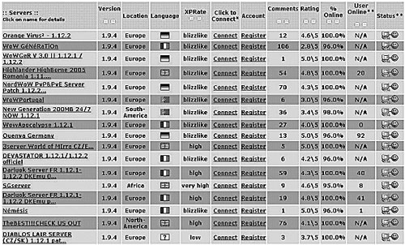</p>
<br class="calibre15"/>
<p class="docText">At the time of this writing, MaNGOS and WoWEmu appeared to be popular choices for setting up a private server.<sup class="docFootnote"><a class="pcalibre6 pcalibre5 calibre1" href="#ch09fn03">[3]</a></sup> MaNGOS is open source and has an active development staff.<sup class="docFootnote"><a class="pcalibre6 pcalibre5 calibre1" href="#ch09fn04">[4]</a></sup></p><blockquote class="calibre24"><p class="docFootnote1"><sup class="calibre31"><a name="ch09fn03" class="pcalibre calibre1">[3]</a></sup> Popularity as rated by &lt;<a class="pcalibre6 pcalibre5 calibre1" target="_blank" href="http://forum.ragezone.com/world-warcraft/">http://forum.ragezone.com/world-warcraft/</a>&gt;.</p></blockquote><blockquote class="calibre24"><p class="docFootnote1"><sup class="calibre31"><a name="ch09fn04" class="pcalibre calibre1">[4]</a></sup> For more on the MaNGOS project, see &lt;<a class="pcalibre6 pcalibre5 calibre1" target="_blank" href="http://www.mangosproject.org/forum/">http://www.mangosproject.org/forum/</a>&gt;.</p></blockquote>
<a name="ch09lev2sec4" class="pcalibre calibre1"></a>
<h4 id="title-IDAFBISF" class="docSection2Title">Client Rendering Options</h4>
<p class="docText">You have many options for rendering a 3D universe, and several open source projects are available for building games. If you need a professional solution for rendering and gaming, consider something like the Torque engine distributed by GarageGames.com. Torque was originally used to create the popular game Tribes. A good open source option is the OGRE 3D platform (described in <a class="pcalibre6 pcalibre5 calibre1" href="ch07.html#ch07">Chapter 7</a>). In any case, there are several ways to render and reuse models and other client-side media content from an existing game.</p>
<p class="docText">In the experiments we describe next, the models, animations, textures, and terrain are all borrowed successfully from WoW media files and reused by the replacement client program. Because media for the WoW universe is usually stored in a set of files located in a directory structure under the game's installation directory, they are particularly easy to find and extract.</p>
<a name="ch09lev2sec5" class="pcalibre calibre1"></a>
<h4 id="title-IDA1BISF" class="docSection2Title">Model Construction</h4>
<p class="docText">Games use a large number of objects to model and then render the game world. 3D models for a game contain many different components. Here is a short WoW-centric list:</p>
<ul class="calibre18"><li class="calibre19"><p class="docText">Models</p></li><li class="calibre19"><p class="docText">Animations</p></li><li class="calibre19"><p class="docText">Bone definitions</p></li><li class="calibre19"><p class="docText">Texture animation definitions</p></li><li class="calibre19"><p class="docText">Model vertexes</p></li><li class="calibre19"><p class="docText">Model views</p></li><li class="calibre19"><p class="docText">Model geosets</p></li><li class="calibre19"><p class="docText">Model texture units</p></li><li class="calibre19"><p class="docText">Model render flags</p></li><li class="calibre19"><p class="docText">Model color definitions</p></li><li class="calibre19"><p class="docText">Model transparency definitions</p></li><li class="calibre19"><p class="docText">Model light definitions</p></li><li class="calibre19"><p class="docText">Model camera definitions</p></li><li class="calibre19"><p class="docText">Model particle systems</p></li><li class="calibre19"><p class="docText">Model particle emitter definitions</p></li><li class="calibre19"><p class="docText">Model ribbon emitter definitions</p></li></ul>
<p class="docText">To make this more concrete, consider that a character model in WoW contains many geometry sets for different hairstyles. The player can choose a hairstyle, and the appropriate hairstyle mesh will be used for rendering. In <a class="pcalibre6 pcalibre5 calibre1" href="#ch09fig08">Figure 9-8</a>, we have imported the 3D model of a character in WoW and separated the various submeshes. You can see a large number of hairstyles, five different cloaks, a sash, a belt, a dress, and various armor pieces. The game chooses which of these to render based on what the character is wearing.</p>
<a name="ch09fig08" class="pcalibre calibre1"></a><p class="calibre28"><center class="calibre29">
<h5 class="docFigureTitle">Figure 9-8. Character models are decorated with mesh skin in WoW and most other games. Here we display some of the submeshes stored along with a character model in the WoW client files. (Reproduced with permission from <a class="pcalibre6 pcalibre5 calibre1" target="_blank" href="http://www.wowstatus.net">www.wowstatus.net</a>.)</h5>
</center></p><p class="docText"><div class="v8 pcalibre3 pcalibre2"><a target="_blank" href="fig09-08_alt.jpg" class="pcalibre calibre20">[View full size image]</a></div>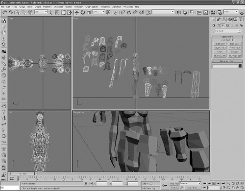</p>
<br class="calibre15"/>
<p class="docText">All modern games use similar objects and methods for modeling. Game makers consider these objects important to the look and feel of their games, and they sometimes become perturbed when people talk about and use them. That doesn't stop online game hackers from doing so, however. None of the techniques we describe will come as news to hard-core game hackers.</p>
<p class="docText">To help you better understand game objects, we show you a few of the objects contained in the WoW game client. We extracted them from the media files installed with the game by using commonly available tools. We <a name="iddle1704" class="pcalibre calibre1"></a><a name="iddle1759" class="pcalibre calibre1"></a><a name="iddle1778" class="pcalibre calibre1"></a><a name="iddle2167" class="pcalibre calibre1"></a><a name="iddle2323" class="pcalibre calibre1"></a>already introduced one tool, WowModelView, that works against WoW files.</p>
<p class="docText">Other games have their share of extraction and manipulation tools as well, as you can see in <a class="pcalibre6 pcalibre5 calibre1" href="#ch09table01">Table 9-1</a>.</p>
<a name="ch09table01" class="pcalibre calibre1"></a><p class="calibre28"><table cellspacing="0" frame="hsides" rules="groups" cellpadding="5" class="calibre108"><caption class="calibre109"><h5 class="docFigureTitle">Table 9-1. Tools for Hacking Game Models</h5></caption><colgroup span="2" class="calibre40"><col width="250" class="calibre41"/><col width="250" class="calibre41"/></colgroup><thead class="calibre42"><tr class="calibre35"><th class="bottomBorder" scope="col" valign="top"><p class="docText">Tool</p></th><th class="bottomBorder" scope="col" valign="top"><p class="docText">Game</p></th></tr></thead><tr class="calibre2"><td class="docTableCell" valign="top"><p class="docText">WowMapView</p></td><td class="docTableCell" valign="top"><p class="docText">WoW</p></td></tr><tr class="calibre2"><td class="docTableCell" valign="top"><p class="docText">WowModelView</p></td><td class="docTableCell" valign="top"><p class="docText">WoW</p></td></tr><tr class="calibre2"><td class="docTableCell" valign="top"><p class="docText">MyWarCraftStudio</p></td><td class="docTableCell" valign="top"><p class="docText">WoW</p></td></tr><tr class="calibre2"><td class="docTableCell" valign="top"><p class="docText">Radiant</p></td><td class="docTableCell" valign="top"><p class="docText">Call of Duty 2</p></td></tr><tr class="calibre2"><td class="docTableCell" valign="top"><p class="docText">F.E.A.R. Modification Tools</p></td><td class="docTableCell" valign="top"><p class="docText">F.E.A.R.</p></td></tr><tr class="calibre2"><td class="docTableCell" valign="top"><p class="docText">HL2 SDK</p></td><td class="docTableCell" valign="top"><p class="docText">Half-Life</p></td></tr><tr class="calibre2"><td class="docTableCell" valign="top"><p class="docText">DS2TK</p></td><td class="docTableCell" valign="top"><p class="docText">Dungeon Siege II</p></td></tr><tr class="calibre2"><td class="docTableCell" valign="top"><p class="docText">TES Construction Set</p></td><td class="docTableCell" valign="top"><p class="docText">The Elder Scrolls</p></td></tr></table></p><br class="calibre15"/>
<p class="docText">WowModelView has a reasonably sophisticated interface. <a class="pcalibre6 pcalibre5 calibre1" href="#ch09fig09">Figure 9-9</a> is a screenshot of WowModelView in action. <a class="pcalibre6 pcalibre5 calibre1" href="#ch09fig10">Figure 9-10</a> shows the same engine rendering a location from WoW.</p>
<a name="ch09fig09" class="pcalibre calibre1"></a><p class="calibre28"><center class="calibre29">
<h5 class="docFigureTitle">Figure 9-9. This screenshot taken from a session with WowModelView shows the program's reasonably sophisticated interface.</h5>
</center></p><p class="docText"><div class="v8 pcalibre3 pcalibre2"><a target="_blank" href="fig09-09_alt.jpg" class="pcalibre calibre20">[View full size image]</a></div>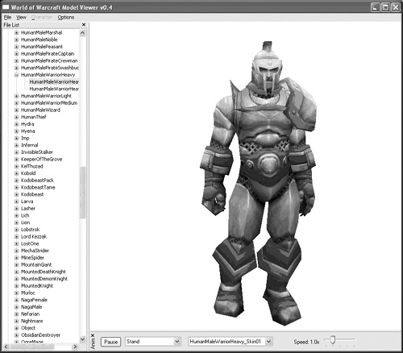</p>
<br class="calibre15"/>
<a name="ch09fig10" class="pcalibre calibre1"></a><p class="calibre28"><center class="calibre29">
<h5 class="docFigureTitle">Figure 9-10. A picture of a deadmines instance (a location in the WoW universe) as borrowed from WoW and viewed with WowMapView.</h5>
</center></p><p class="docText">
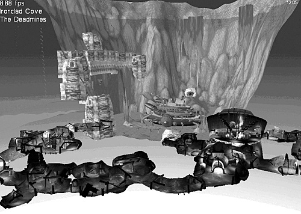</p>
<br class="calibre15"/>
<p class="docText"><a name="iddle1026" class="pcalibre calibre1"></a><a name="iddle1311" class="pcalibre calibre1"></a><a name="iddle1353" class="pcalibre calibre1"></a><a name="iddle1369" class="pcalibre calibre1"></a><a name="iddle1693" class="pcalibre calibre1"></a><a name="iddle1727" class="pcalibre calibre1"></a><a name="iddle1728" class="pcalibre calibre1"></a><a name="iddle1756" class="pcalibre calibre1"></a><a name="iddle2139" class="pcalibre calibre1"></a><a name="iddle2202" class="pcalibre calibre1"></a>Some tools were designed specifically for game modding and can be very robust. For example, The Elder Scrolls, a popular fantasy game, has a complete development environment for creating and modifying content. <a class="pcalibre6 pcalibre5 calibre1" href="#ch09fig11">Figure 9-11</a> shows a TES Construction Set screenshot.</p>
<a name="ch09fig11" class="pcalibre calibre1"></a><p class="calibre28"><center class="calibre29">
<h5 class="docFigureTitle">Figure 9-11. A screenshot of the TES Construction Set in action. (From &lt;<a class="pcalibre6 pcalibre5 calibre1" target="_blank" href="http://en.wikipedia.org/wiki/Image:TES4.png">http://en.wikipedia.org/wiki/Image:TES4.png</a>&gt;.)</h5>
</center></p><p class="docText"><div class="v8 pcalibre3 pcalibre2"><a target="_blank" href="fig09-11_alt.jpg" class="pcalibre calibre20">[View full size image]</a></div>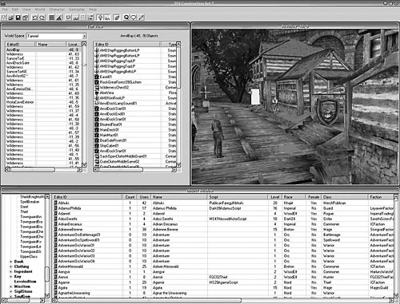</p>
<br class="calibre15"/>
<p class="docText"><a name="iddle1608" class="pcalibre calibre1"></a><a name="iddle1741" class="pcalibre calibre1"></a><a name="iddle1751" class="pcalibre calibre1"></a><a name="iddle1755" class="pcalibre calibre1"></a><a name="iddle1894" class="pcalibre calibre1"></a><a name="iddle2135" class="pcalibre calibre1"></a>Returning to WoW, the objects in WoW media files can be extracted and used in an alternative environment such as the OGRE environment introduced in <a class="pcalibre6 pcalibre5 calibre1" href="ch07.html#ch07">Chapter 7</a>. Of course, the objects and media in the files are all copyrighted material, so if you create your own game using Blizzard media, you are not allowed to redistribute it in any way.</p>
<p class="docText">Transforming models from one format to another, say, from WoW into 3D Studio Max, can sometimes take some work. Modders quickly collect a whole arsenal of tools that are used together in a pipe (something that anyone who has played with graphics will understand). And when more than one tool is required to get a model or object into a format you need, this process is sometimes called a tool chain. For example, to get a WoW model into 3D Studio, the model is first exported with MyWarCraftStudio (<a class="pcalibre6 pcalibre5 calibre1" href="#ch09fig12">Figure 9-12</a>), then loaded into Milkshape, then exported again, then imported into 3D Studio via a plug-in.</p>
<a name="ch09fig12" class="pcalibre calibre1"></a><p class="calibre28"><center class="calibre29">
<h5 class="docFigureTitle">Figure 9-12. The MyWarCraftStudio program allows exporting of WoW models.</h5>
</center></p><p class="docText"><div class="v8 pcalibre3 pcalibre2"><a target="_blank" href="fig09-12_alt.jpg" class="pcalibre calibre20">[View full size image]</a></div>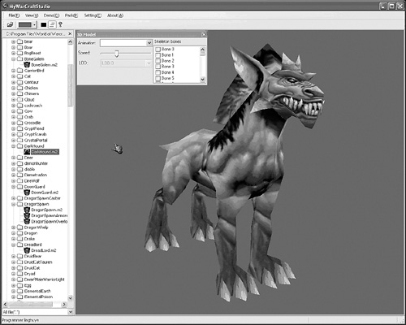</p>
<br class="calibre15"/>
<p class="docText">In some cases, tool chains can get quite long, with four or more tools used together to compute a final product. Things get complicated when <a name="iddle1753" class="pcalibre calibre1"></a><a name="iddle2096" class="pcalibre calibre1"></a>models contain texture data and animations, and each tool in your arsenal may have quirks. Sometimes a tool might not be able to properly convert the animation sequences or bones.</p>
<a name="ch09lev3sec1" class="pcalibre calibre1"></a>
<h5 id="title-IDA32ISF" class="docSection3Title">Stand-ins</h5>
<p class="docText">Hobby game hackers eager to play around with MMO construction can use models and objects belonging to games they own to create their own miniature adventure games and/or MMO projects. Sometimes these objects are called stand-ins because developers may replace the borrowed media later with artwork of their own. Developing a complete set of objects and models from scratch is a huge and expensive undertaking.</p>
<a name="ch09lev2sec6" class="pcalibre calibre1"></a>
<h4 id="title-IDAN3ISF" class="docSection2Title">Textures</h4>
<p class="docText">One of the simplest things to mod is game texture. We already show the results of the ever-popular texture modding nude patch at the top of this chapter. One of the reasons texture mods are so easy is that a single graphics file is usually all that needs to be replaced. Image editing programs are fairly easy to use for those with artistic talents.</p>
<p class="docText">The coolest thing is that the result of texture work is immediately visible in the game. In other words, you can get quick satisfaction.</p>
<a name="ch09lev3sec2" class="pcalibre calibre1"></a>
<h5 id="title-IDA03ISF" class="docSection3Title">Artistic Angles</h5>
<p class="docText">Some forms of texture modification have taken more of an artistic bent. For example, antiwar activists have created a collection of graffiti art hosted at Velvet-Strike that can be used with the Counter-Strike FPS game, as shown in <a class="pcalibre6 pcalibre5 calibre1" href="#ch09fig13">Figures 9-13</a> and <a class="pcalibre6 pcalibre5 calibre1" href="#ch09fig14">9-14</a>.</p>
<a name="ch09fig13" class="pcalibre calibre1"></a><p class="calibre28"><center class="calibre29">
<h5 class="docFigureTitle">Figure 9-13. Antiwar graffiti for Counter-Strike. (From &lt;<a class="pcalibre6 pcalibre5 calibre1" target="_blank" href="http://www.opensorcery.net/velvet-strike/sprays.html">http://www.opensorcery.net/velvet-strike/sprays.html</a>&gt;. Reproduced with permission from Anne Marie Schleiner.)</h5>
</center></p><p class="docText">
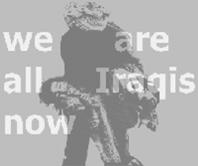</p>
<br class="calibre15"/>
<a name="ch09fig14" class="pcalibre calibre1"></a><p class="calibre28"><center class="calibre29">
<h5 class="docFigureTitle">Figure 9-14. More antiwar graffiti for Counter-Strike. (From &lt;<a class="pcalibre6 pcalibre5 calibre1" target="_blank" href="http://www.opensorcery.net/velvet-strike/sprays.html">http://www.opensorcery.net/velvet-strike/sprays.html</a>&gt;. Reproduced with permission from Anne Marie Schleiner.)</h5>
</center></p><p class="docText">
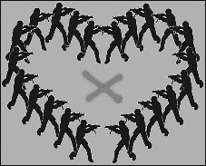</p>
<br class="calibre15"/>
<p class="docText">Texture modding is easy and fun. Would-be game hackers who are new to the sport might try this first. You can see great results with only a few hours of play.</p>
<a name="ch09lev2sec7" class="pcalibre calibre1"></a>
<h4 id="title-IDAXAJSF" class="docSection2Title">Terrain</h4>
<p class="docText">Terrain and levels can be generated automatically (something called <span class="docEmphasis">procedural generation</span>), or you can construct them ahead of time and store them as 3D models known as <span class="docEmphasis">heightmaps</span>. Games have their own special file formats for storing terrain information. In WoW, terrain is stored in the ADT format (<a class="pcalibre6 pcalibre5 calibre1" href="#ch09fig15">Figure 9-15</a>). In the case of heightmaps, you can use a bitmap image to define how high the ground should be; the 3D model is generated on the fly from this information. <a class="pcalibre6 pcalibre5 calibre1" href="#ch09fig16">Figure 9-16</a> shows an example of a heightmap.</p>
<a name="ch09fig15" class="pcalibre calibre1"></a><p class="calibre28"><center class="calibre29">
<h5 class="docFigureTitle">Figure 9-15. Terrain for WoW from an ADT file as viewed in MyWarCraftStudio.</h5>
</center></p><p class="docText"><div class="v8 pcalibre3 pcalibre2"><a target="_blank" href="fig09-15_alt.jpg" class="pcalibre calibre20">[View full size image]</a></div>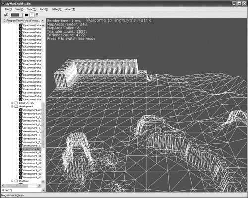</p>
<br class="calibre15"/>
<a name="ch09fig16" class="pcalibre calibre1"></a><p class="calibre28"><center class="calibre29">
<h5 class="docFigureTitle">Figure 9-16. A heightmap shows terrain from a "god's eye" view, with different shades used to represent different terrain altitudes.</h5>
</center></p><p class="docText">
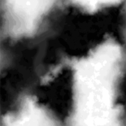</p>
<br class="calibre15"/>
<p class="docText">The rendering engine can use the heightmap from <a class="pcalibre6 pcalibre5 calibre1" href="#ch09fig16">Figure 9-16</a> to generate terrain, as shown in <a class="pcalibre6 pcalibre5 calibre1" href="#ch09fig17">Figure 9-17</a>.</p>
<a name="ch09fig17" class="pcalibre calibre1"></a><p class="calibre28"><center class="calibre29">
<h5 class="docFigureTitle">Figure 9-17. A wireframe rendering of terrain generated using a heightmap.</h5>
</center></p><p class="docText">
</p>
<br class="calibre15"/>
<p class="docText"><a name="iddle1609" class="pcalibre calibre1"></a><a name="iddle1742" class="pcalibre calibre1"></a><a name="iddle1761" class="pcalibre calibre1"></a><a name="iddle1822" class="pcalibre calibre1"></a><a name="iddle1937" class="pcalibre calibre1"></a><a name="iddle2300" class="pcalibre calibre1"></a>Wireframe terrain requires textures in order to look like ground, stone, grass, and so on. Depending on the tools used, terrain textures can be painted directly onto the surface, automatically generated, or developed using image editing software such as Adobe Photoshop.</p>
<p class="docText">We built a textured terrain using a combination of tools. The result can be seen in <a class="pcalibre6 pcalibre5 calibre1" href="#ch09fig18">Figures 9-18</a> and <a class="pcalibre6 pcalibre5 calibre1" href="#ch09fig19">9-19</a>. <a class="pcalibre6 pcalibre5 calibre1" href="#ch09fig18">Figure 9-18</a> shows a view from above <a name="iddle1455" class="pcalibre calibre1"></a><a name="iddle1515" class="pcalibre calibre1"></a><a name="iddle1760" class="pcalibre calibre1"></a><a name="iddle2091" class="pcalibre calibre1"></a><a name="iddle2134" class="pcalibre calibre1"></a><a name="iddle2181" class="pcalibre calibre1"></a><a name="iddle2195" class="pcalibre calibre1"></a>(similar to the heightmap). <a class="pcalibre6 pcalibre5 calibre1" href="#ch09fig19">Figure 9-19</a> shows a more traditional view from ground level.</p>
<a name="ch09fig18" class="pcalibre calibre1"></a><p class="calibre28"><center class="calibre29">
<h5 class="docFigureTitle">Figure 9-18. With texture added, the "god's eye" view from the heightmap begins to look more like a picture from space.</h5>
</center></p><p class="docText">
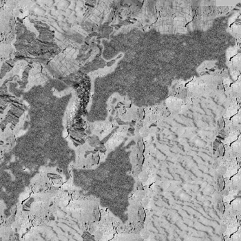</p>
<br class="calibre15"/>
<a name="ch09fig19" class="pcalibre calibre1"></a><p class="calibre28"><center class="calibre29">
<h5 class="docFigureTitle">Figure 9-19. The same textured terrain rendered from ground level.</h5>
</center></p><p class="docText">
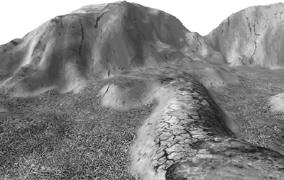</p>
<br class="calibre15"/>
<p class="docText">Terrain is very important in games. Unfortunately, most hobbyists don't do a very good job with terrain, ending up with silly-looking worlds. This is odd considering how many tools exist for doing decent terrain generation (some with very advanced options). At the time of this writing, a set of upcoming MMOs are leveraging a program called SpeedTree &lt;<a class="pcalibre6 pcalibre5 calibre1" target="_blank" href="http://www.speedtree.com">http://www.speedtree.com</a>&gt; that can procedurally generate lush forests, saving game developers huge amounts of money that would otherwise be spent in terrain development (<a class="pcalibre6 pcalibre5 calibre1" href="#ch09fig20">Figure 9-20</a>).</p>
<a name="ch09fig20" class="pcalibre calibre1"></a><p class="calibre28"><center class="calibre29">
<h5 class="docFigureTitle">Figure 9-20. A SpeedTree-generated view. This image is taken from the game Fatal Inertia, as displayed on the SpeedTree site. (From &lt;<a class="pcalibre6 pcalibre5 calibre1" target="_blank" href="">http://www.speedtree.com/gallery/index.php?Page=70&amp;Sort=0#</a>&gt;. Reproduced with permission from <a class="pcalibre6 pcalibre5 calibre1" target="_blank" href="http://www.speedtree.com">www.speedtree.com</a>.)</h5>
</center></p><p class="docText">
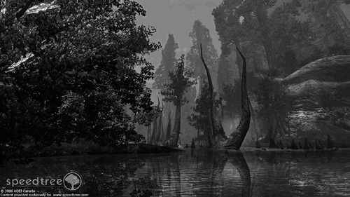</p>
<br class="calibre15"/>
<p class="docText">Another inexpensive program for terrain generation is called Terragen &lt;<a class="pcalibre6 pcalibre5 calibre1" target="_blank" href="http://www.planetside.co.uk/terragen/">http://www.planetside.co.uk/terragen/</a>&gt;. Terragen can render photorealistic terrain (<a class="pcalibre6 pcalibre5 calibre1" href="#ch09fig21">Figure 9-21</a>). Terragen can export the terrain in the form of a heightmap, making it particularly easy to import into many existing games.</p>
<a name="ch09fig21" class="pcalibre calibre1"></a><p class="calibre28"><center class="calibre29">
<h5 class="docFigureTitle">Figure 9-21. A Terragen-rendered landscape, with photorealistic qualities. (From &lt;<a class="pcalibre6 pcalibre5 calibre1" target="_blank" href="http://www.planetside.co.uk/gallery/v/tg09gallery/GalleryImage457296.jpg.html">http://www.planetside.co.uk/gallery/v/tg09gallery/GalleryImage457296.jpg.html</a>&gt;. Reproduced with permission from <a class="pcalibre6 pcalibre5 calibre1" target="_blank" href="http://www.planetside.co.uk">www.planetside.co.uk</a>.)</h5>
</center></p><p class="docText">
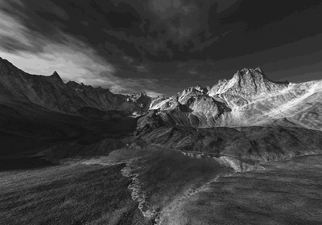</p>
<br class="calibre15"/>
<p class="docText">When it comes to game mods, you can generate entirely new terrains and level maps using more tools than we could possibly cover in a chapter. In fact, entire books already exist that are devoted exclusively to modding <a name="iddle1098" class="pcalibre calibre1"></a><a name="iddle1239" class="pcalibre calibre1"></a><a name="iddle1610" class="pcalibre calibre1"></a><a name="iddle1687" class="pcalibre calibre1"></a><a name="iddle1743" class="pcalibre calibre1"></a><a name="iddle1811" class="pcalibre calibre1"></a><a name="iddle2221" class="pcalibre calibre1"></a>games. One good example has grown up around the Unreal Engine by Epic Games &lt;<a class="pcalibre6 pcalibre5 calibre1" target="_blank" href="http://www.epicgames.com">http://www.epicgames.com</a>&gt;. Unreal is a particularly popular game engine with a modding community that the game company actively supports. A great book on developing new worlds with the Unreal Engine is <span class="docEmphasis">Mastering Unreal Technology: The Art of Level Design</span> by Jason Busby, Zak Parrish, and Joel Van Eenwyk (Sams, 2004).</p>
<p class="docText"> </p>
<a href="11061538.html" class="pcalibre calibre1"></a><ul class="calibre18"></ul></td></tr></table><table width="100%" border="0" cellspacing="0" cellpadding="2" class="calibre4"><tr class="calibre2"><td valign="middle" class="v1 pcalibre1" height="5"></td></tr><tr class="calibre2"><td valign="middle" class="v1 pcalibre1"><table cellpadding="0" cellspacing="0" border="0" width="100%" class="calibre4"><tr class="calibre2"><td class="calibre6"><span class="calibre7"> </span>
                   
                  <span class="calibre7">   </span>
             <span class="calibre7"> </span></td></tr></table></td><td class="calibre8"/><td valign="middle" class="v2 pcalibre1"> 
           
          <span class="calibre7"><a target="_self" href="ch09.html" title="Previous section" class="pcalibre calibre1"></a></span>
				
				 
				
				<span class="calibre7"><a target="_self" href="ch09lev1sec2.html" title="Next section" class="pcalibre calibre1"></a></span></td></tr></table><table width="100%" border="0" cellspacing="0" cellpadding="2" class="calibre4"><tr class="calibre2"><td valign="top" class="calibre14"><span class="calibre7"></span></td></tr></table></div><!--IP User 2--></td></tr></table></td><td class="calibre3">
                         
                      </td></tr><tr class="calibre2"><td colspan="3" valign="bottom" class="calibre3"><br class="calibre15"/><p class="v5 pcalibre1"></p><br class="calibre15"/></td></tr></table></div>

{% endraw %}

